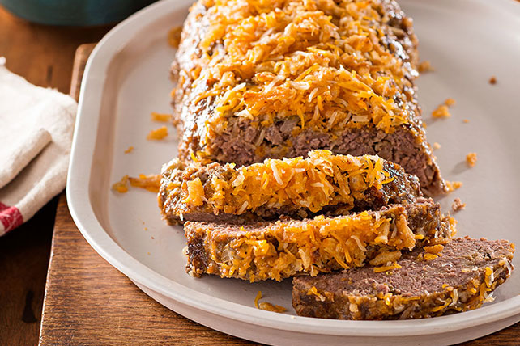

French Onion Meatloaf

Description
A family favorite! The French-fried onions really make this meatloaf super yummy!
Excellent paired with mashed potatoes and green beans with bacon.
Ingredients
- cooking spray
- 1/2 cup ketchup
- 1/2 cup brown sugar
- 1 1/2 pounds ground beef
- 3/4 cup French-fried onions
- 3/4 cup bread crumbs
- 2 large eggs
- 1/2 cup sour cream
- 1/4 cup milk
- 1 (1 ounce) package French onion soup mix
- 2 teaspoons garlic powder
- 1 1/2 teaspoons salt
- 1/4 teaspoon cracked black pepper
- 1/4 teaspoon ground ginger
Steps
- Preheat the oven to 350 degrees F (175 degrees C). Spray a 9x5-inch loaf
pan with cooking spray; spread ketchup and brown sugar over the bottom.
- Combine beef, French-fried onions, bread crumbs, eggs, sour cream,
milk, soup mix, garlic, salt, pepper, and ginger in a large bowl.
Mix well and shape into a loaf over the ketchup and brown sugar.
- Bake in the preheated oven until no longer pink in the center,
about 1 hour. An instant-read thermometer inserted into the center should read at
least 160 degrees F (70 degrees C).